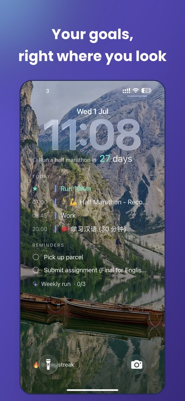
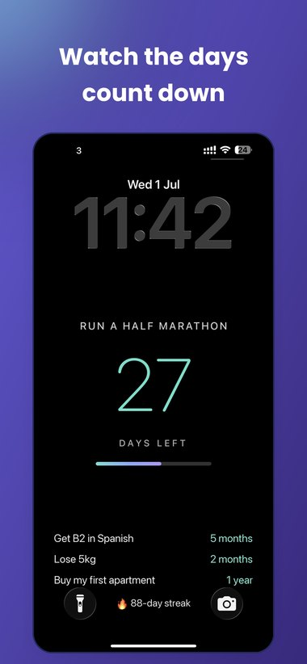
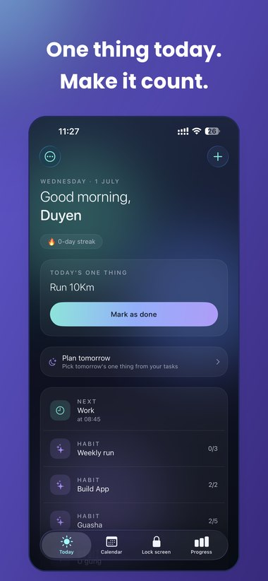
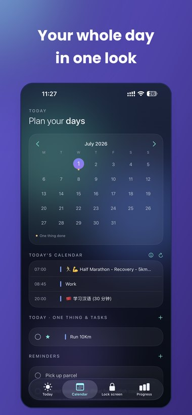
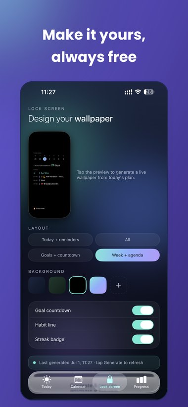

Seen: goals on phone lock screen
A hobby project I took from one user insight all the way to the App Store, owning every step: discovery, design, build, and ship.
Role: Product, design & build · Built with: Claude AI · Status: Shipped to the App Store
The insight
You look at your phone 100+ times a day
Every productivity app fights the same losing battle: a reminder you have to open is a reminder you ignore. Meanwhile the one screen you actually see dozens of times a day, your lock screen, sits empty. That's the idea behind Seen: what gets seen gets done. Put your goals, streaks, and your one thing for today where you already look, and they re-focus you all day long without you opening a thing.
Who it's for: busy people who plan their day in the morning and lose the thread by lunch. The opening I bet on was a product built on the opposite values to what's out there: goal-first instead of calendar-cram, and genuinely free and private instead of paywalling the customization people actually want.
The user journey
Mapping a normal day, and where the plan falls apart
This map is a persona I built, not field research. I sketched one ordinary day for the person I was designing for: someone who likes seeing their day on their lock screen so it quietly reminds them what they need to do. To sanity-check it I talked to a handful of people online and saw genuine interest on Threads, enough of a signal to justify building. The map made the gap obvious, the drop-off is never at planning, it is in the hours in between, exactly where the lock screen lives.
Scroll the map sideways on mobile · emotions run hopeful → deflated exactly in the gap Seen fills.
Reading the map top to bottom, the insight writes itself: the emotional low is not a motivation problem, it is a visibility problem. So Seen does not try to add another planning ritual, it moves the plan she already made onto the surface she cannot avoid.
The bet
A full-screen wallpaper, not a tiny widget
The core product decision: don't ship another small widget hiding in a corner. Seen generates a bold, full-screen wallpaper from your plan, your one thing, a goal countdown, streaks, and your day's schedule, impossible to miss the moment you pick up your phone. Free, on your device, no account.





Building it
Designed and built end-to-end, with AI
I'm a product manager, not a full-time iOS engineer, so I paired with AI (Claude) to go from idea to a real, shipping app, designing the architecture, writing the Swift, and iterating screen by screen. I couldn't have hand-coded this, so the interesting story isn't the syntax, it's the product and design calls I made: what to build, what to cut, and how each screen should feel. It is a genuine native app, not a prototype.
Iterating
Shipping is where the real product questions start
Building surfaced the interesting problems. iOS Shortcuts' "Set Wallpaper" action has Apple-side bugs, so chasing a perfect auto-wallpaper was a trap. I re-framed the advantage around reliability instead of magic: widget-first (widgets always update), plus a health check that detects a stale wallpaper and nudges the user to refresh.
Real use also surfaced product tensions, and here's how I called them. On whether a single "one thing" felt too rigid, I kept the one thing as the hero for focus but gave it room for a short supporting list, so the default stays sharp without punishing busy days. On whether reminders should be scoped to a day, I chose day-scoped by default to match how people actually plan, with anything longer living as a goal countdown instead. My rule for calls like these: protect the one clear signal on the lock screen first, add flexibility only when it doesn't blur that.
Shipping it
From Xcode to the App Store
I packaged and submitted the whole thing myself: wrote the listing copy and keywords, generated the app icon in code, produced the screenshots, and set the App Privacy label to "Data Not Collected", which is simply true, because Seen makes no network calls at all. Productivity category, free, 4+, private by design.
Where it stands
Just launched, and now I'm watching it
Seen is newly on the App Store, so the honest status is: live, with performance tracking in progress. I'm treating launch as the start of the experiment, not the finish line, and measuring as real usage comes in.
What I set out to test: whether putting goals on the lock screen actually changes behaviour, whether people accept the one-tap Shortcut trade-off to set a wallpaper, and whether "one thing" beats a full to-do list for daily focus.
What I've learned so far: the reliability-first framing has held up, widgets that always update beat a "magical" auto-wallpaper that sometimes doesn't, and the free-and-private positioning resonates more than any single feature.
On the App Store
Why it matters for the work I do
What this sharpened that I'd bring to a growth team
Building Seen solo forced me to own the full loop I usually influence as a Growth PM: a sharp insight, a first-glance value proposition, ruthless scoping toward one clear signal, and a reliability-first activation moment (the one-tap setup). It's the same instinct I bring to onboarding and activation work, just with my hands on every part of it.